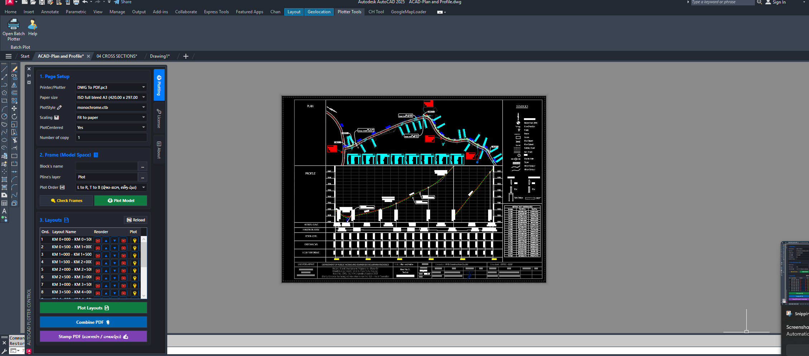
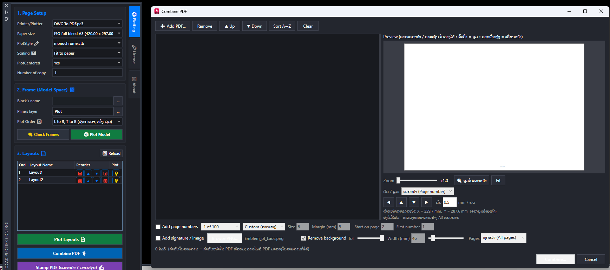
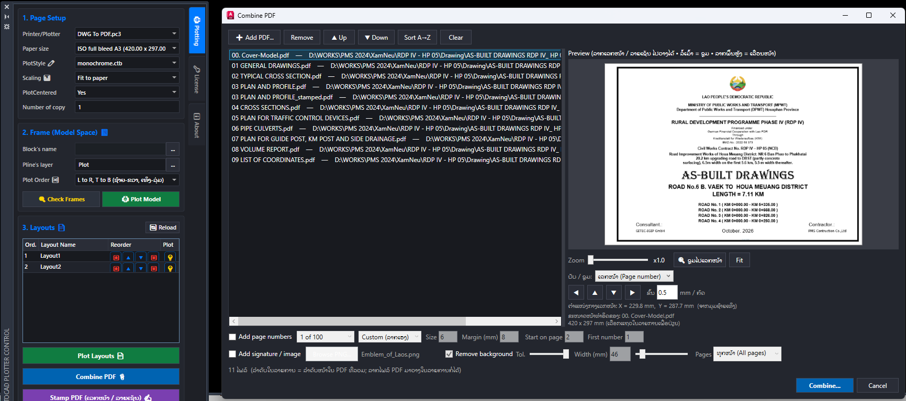

AutoCAD
Plotter Control
ຄວບຄຸມການພິມແບບຫຼາຍແຜ່ນໃນ Palette ດຽວ: Page Setup, Frame, Layout ແລະ PDF.
 ຮູບຕົວຢ່າງ
ຮູບຕົວຢ່າງຮູບໜ້າຈໍ
ຕົວຢ່າງການໃຊ້ງານຈິງໃນ AutoCAD.

ລໍຖ້າຮູບ
ລໍຖ້າຮູບ
ລໍຖ້າຮູບແບບເກົ່າ ທຽບກັບ ໃຊ້ Add-in
ວຽກດຽວກັນ, ໃຊ້ເວລາໜ້ອຍລົງ ແລະ ຜິດພາດໜ້ອຍລົງ.
ແຕ້ມດ້ວຍມື
- ເປີດ Plot ທີລະ Layout
- ຕັ້ງ Page Setup ຊ້ຳທຸກແຜ່ນ
- ຕັ້ງຊື່ໄຟລ໌ PDF ເອງ
ໃຊ້ Plotter Control
- ເລືອກຫຼາຍ Layout ແລ້ວພິມເທື່ອດຽວ
- Page Setup ໃຊ້ຮ່ວມກັນ
- ໄດ້ PDF ຫຼາຍແຜ່ນທັນທີ
ຄຸນສົມບັດ
ສິ່ງທີ່ Add-in ນີ້ເຮັດໃຫ້ທ່ານ.
Page Setup
ເລືອກ ແລະ ນຳໃຊ້ Page Setup ຈາກບ່ອນດຽວ.
Frame
ຈັດການກອບແບບ ສຳລັບການພິມ.
Layouts
ເລືອກ Layout ທີ່ຈະພິມ ຈາກລາຍການ.
DWG → PDF
ພິມຫຼາຍແຜ່ນເປັນ PDF ພ້ອມກັນ.
ວິທີໃຊ້
ຈາກເປີດ ຈົນໄດ້ຜົນ.
ເປີດ Palette
ກົດປຸ່ມໃນແຖບ CH Tool.
Page Setup
ເລືອກຮູບແບບການພິມ.
ເລືອກແຜ່ນ
ໝາຍ Layout ທີ່ຕ້ອງການ.
ພິມ
ໄດ້ PDF ທັງໝົດ.
ລາຍລະອຽດ
ຂໍ້ມູນທາງເຕັກນິກ ແລະ ໂປຣແກຣມທີ່ໃຊ້ໄດ້.
ລະບົບປະຕິບັດການWindows
ເວີຊັນ2.0.0
ມື້ວາງຈຳໜ່າຍ24/08/2026
ອັບເດດລ່າສຸດ23/10/2026
ພາສາອັງກິດ
ອອກເປັນPDF
ໜ້າຈໍPalette ສີເຂັ້ມ ແບ່ງເປັນໝວດ
ໃຊ້ກັບAutoCAD
ໃຊ້ໄດ້ກັບ
C3D
Civil 3D2018, 2019, 2020, 2021, 2022, 2023, 2024, 2025, 2026, 2027
CAD
AutoCAD2018, 2019, 2020, 2021, 2022, 2023, 2024, 2025, 2026, 2027
ຄຳຖາມທີ່ພົບເລື້ອຍ
ກົດຄຳຖາມເພື່ອເບິ່ງຄຳຕອບ.
ຕິດຕັ້ງຍາກບໍ?
ບໍ່ຍາກ. ໃຊ້ໄຟລ໌ Setup (MSI) ຄລິກດຽວ, ແລ້ວເປີດ AutoCAD ໃໝ່.
ມີຄົນຊ່ວຍເຫຼືອບໍ ຖ້າໃຊ້ບໍ່ເປັນ?
ມີ. ທັກ WhatsApp ສົ່ງຮູບໜ້າຈໍມາ, ຜູ້ພັດທະນາຕອບເອງ.
ສອບຖາມ ແລະ ສັ່ງຊື້
ທິບພະຈັນ ພູໄຊ · ຜູ້ພັດທະນາ
020 22223752